Unidad 3: Fundamentos de Cómputo - Lección 25
Has conquistado la física de los electrones, has dominado los mapas de Karnaugh y has sobrevivido a las demostraciones del álgebra formal. Todo este inmenso viaje tenía un único destino: enseñarle a una máquina a procesar números.
En el Laboratorio de la Unidad 2 construiste un circuito que encendía la luz de una escalera (XOR). Hoy, aplicaremos el Isomorfismo de la Lección 21 para revelar que esa misma estructura de compuertas lógicas es capaz de realizar sumas aritméticas.
Pasaremos del humilde Semisumador al Sumador Completo (Full Adder), y encadenaremos su poder para construir una calculadora real de 4 bits en nuestro laboratorio final. ¡Estás a punto de armar la pieza central del procesador de cualquier computadora del planeta!
Recordemos la aritmética básica en binario. Solo tenemos dos números: 0 y 1. Si sumamos, las reglas son:
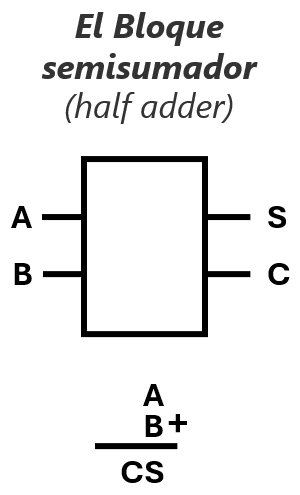
Fig. 1: El Semisumador (Half Adder) visto como un bloque funcional. Entran los dos bits a sumar (A y B), y salen el resultado (S) y el acarreo o 'lo que llevo' (C). Abajo se observa su equivalencia directa con la suma en columna tradicional.
Observa que la columna de la "Suma (S)" se comporta exactamente como una compuerta XOR ($A \oplus B$), y el "Llevo 1" (Acarreo o Carry - C) se comporta exactamente como una compuerta AND ($A \cdot B$).
En la Lección 24 aprendimos a demostrar teoremas. Apliquemos ese poder a nuestra compuerta XOR. Intuitivamente, decimos que XOR significa "A o B, pero NO ambos".
Escribamos esa frase en álgebra: $(A + B) \cdot \overline{(A \cdot B)}$. ¿Podemos demostrar formalmente que esto es exactamente igual a la ecuación canónica de la XOR ($\bar{A}B + A\bar{B}$)?
El Ojo del Ingeniero: ¡Acabas de demostrar matemáticamente que puedes construir una XOR perfecta conectando una OR y una NAND hacia una AND! No hay que adivinar, los axiomas garantizan que funcionará.
Juntando una XOR y una AND obtenemos el Semisumador (Half Adder). Suma dos bits perfectamente. Pero tiene un defecto fatal que le impide sumar números grandes.
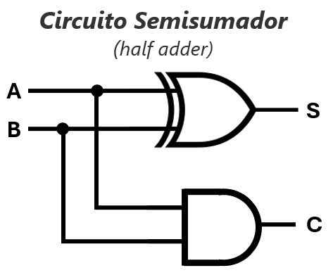
Fig. 2: El Semisumador. Entradas: A, B. Salidas: Suma (S) y Acarreo (C).
Cuando sumabas números grandes en la escuela (ej. 27 + 35), sumabas $7+5=12$, escribías el $2$ y "llevabas $1$" a la siguiente columna.
El Semisumador genera un "Llevo 1" (Carry Out), pero... ¡No tiene por dónde recibir el "1" de la columna anterior! Solo tiene 2 entradas. Para sumar números grandes en cascada, necesitamos una máquina de 3 entradas: $A$, $B$, y el Acarreo de Entrada ($C_{in}$).
El Full Adder es el bloque maestro. A diferencia del Semisumador, este acepta los dos bits que quieres sumar ($A$ y $B$) más el acarreo que viene de la suma anterior ($C_{in}$). Es la máquina perfecta para sumar cualquier columna de una operación aritmética grande.
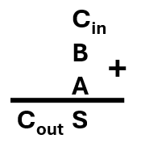
Fig. 3: La operación matemática del Sumador Completo. A los operandos tradicionales ($A$ y $B$) se les suma en la parte superior el acarreo entrante ($C_{in}$). El resultado sigue siendo un bit de suma ($S_0$) y un posible acarreo de salida ($C_{out}$).
Ahora que sabemos qué estamos sumando, construyamos la Tabla de Verdad para las 8 combinaciones posibles de estos 3 bits ($C_{in}$, $B$, $A$):
| Entradas a Sumar | Resultados (Salidas) | |||
|---|---|---|---|---|
| $C_{in}$ (Acarreo previo) (Int. 3) |
B (Int. 2) |
A (Int. 1) |
$C_{out}$ (Llevo 1) | Suma (S) |
| 0 | 0 | 0 | 0 | 0 |
| 0 | 0 | 1 | 0 | 1 |
| 0 | 1 | 0 | 0 | 1 |
| 0 | 1 | 1 | 1 | 0 |
| 1 | 0 | 0 | 0 | 1 |
| 1 | 0 | 1 | 1 | 0 |
| 1 | 1 | 0 | 1 | 0 |
| 1 | 1 | 1 | 1 | 1 |
Análisis de la última fila: Si sumo $1 + 1 + 1$ (A + B + Acarreo previo), el resultado aritmético es 3. En binario, el número 3 se escribe como "11". ¡Por eso ambas salidas ($C_{out}$ a la izquierda, Suma a la derecha) están en 1!
Recordando la Lección 15, podemos extraer las ecuaciones matemáticas directamente de la tabla de verdad observando las filas donde la salida es 1.
Buscamos los 1s en la columna S y escribimos sus minterms (variables en 0 se niegan):
Suma de Productos (SOP):
Abreviación (Notación \(\Sigma\)):
\(S(C_{in}, B, A) = \sum m(1, 2, 4, 7)\)
(Nota matemática: Al factorizar esta expresión gigante, ¡se simplifica mágicamente a una XOR triple: \(S = A \oplus B \oplus C_{in}\)!)
Buscamos los 1s en la columna \(C_{out}\) y extraemos sus minterms:
Suma de Productos (SOP):
Abreviación (Notación \(\Sigma\)):
\(C_{out}(C_{in}, B, A) = \sum m(3, 5, 6, 7)\)
(Pista: Si dibujas el Mapa K para esta ecuación, verás tres grupos de dos unos, ¡lo que simplificaremos en la bitácora final!)
El Mapa K (que harás en la bitácora) funciona bien para 3 o 4 variables. Pero en la industria real, un procesador suma números de 64 bits. Un Mapa K de 64 variables es imposible de dibujar. ¡Aquí es donde el Álgebra de Boole (Lección 24) se convierte en tu única herramienta de diseño!
Tomemos la gigantesca ecuación del Acarreo ($C_{out}$) que acabamos de extraer y apliquemos las leyes del álgebra para reducirla a algo barato de fabricar.
¡Magia Matemática! Usando un astuto truco de ingeniero (repetir el último minterm tres veces con la ley de Idempotencia para que cada uno de los otros términos tuviera una pareja para factorizar), logramos reducir una ecuación gigante a algo extremadamente sencillo de soldar: El acarreo sale si hay dos unos en cualquier combinación.
A diferencia del Semisumador, nuestro nuevo bloque funcional ahora tiene 3 entradas: los dos bits actuales (\(A\) y \(B\)) más el acarreo que nos "pasaron" desde la columna anterior (\(C_{in}\)).
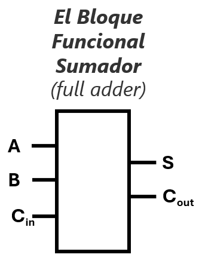
Fig. 4: El Sumador Completo visto como "Caja Negra". Tres entradas (\(A, B, C_{in}\)) y dos salidas (\(S, C_{out}\)). ¡Esta cajita ya puede sumar cualquier columna de números!
Pero los ingenieros no hacen magia, hacen arquitectura. ¿Cómo construimos esta "caja negra" por dentro sin reinventar la rueda? ¡Usando las piezas que ya tenemos! Unimos dos Semisumadores y agregamos una compuerta OR para el manejo final del acarreo.
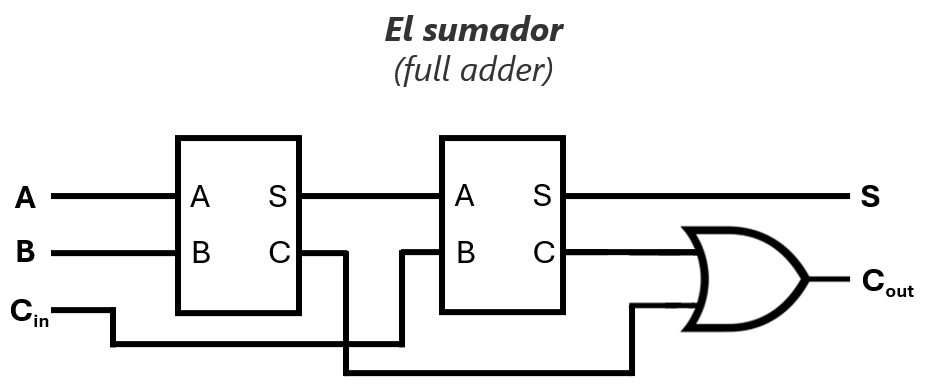
Fig. 5: Rayos X al Full Adder. El primer Half Adder suma \(A+B\). El segundo Half Adder toma ese resultado y le suma el acarreo entrante (\(C_{in}\)). Si CUALQUIERA de las dos sumas intermedias genera un acarreo, la compuerta OR final lo detecta y lanza el \(C_{out}\) final.
Ecuación de Suma: $S = A \oplus B \oplus C_{in}$
Ecuación de Acarreo: $C_{out} = (A \cdot B) + (C_{in} \cdot (A \oplus B))$
Si abrimos las "cajas negras" de los dos Semisumadores, el circuito real que debemos armar se ve así. Presta especial atención a los números azules (¡son los pines exactos de los chips TTL reales!) y a las ecuaciones verdes en la parte superior.
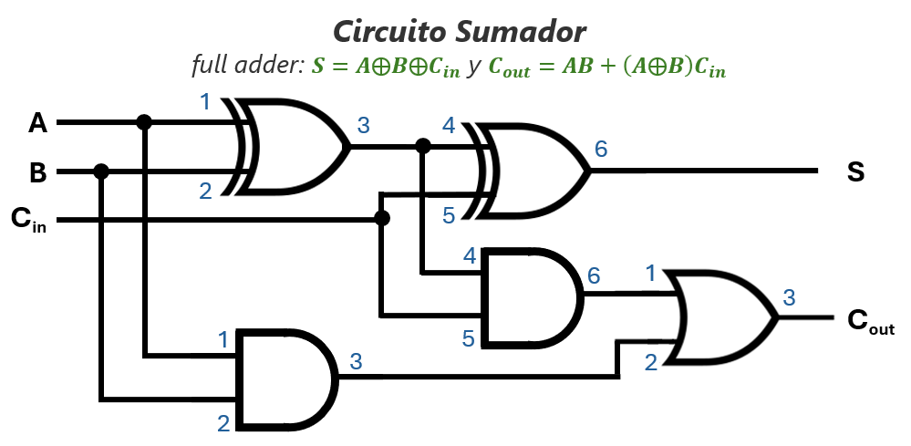
Fig. 6: El circuito del Sumador Completo en hardware. El primer grupo (izquierda) suma \(A+B\). El segundo grupo (derecha) le suma el \(C_{in}\). La compuerta OR final recolecta cualquier acarreo generado.
🛠️ Análisis de Inventario (Chips requeridos):
Si te fijas bien, la imagen nos pide 2 compuertas XOR, 2 compuertas AND y 1 compuerta OR. Como cada chip TTL estándar trae 4 compuertas en su interior, ¡puedes construir este Sumador Completo usando exactamente 3 chips (un 7486, un 7408 y un 7432)! Los números azules te guían para usar las compuertas 1 y 2 de cada integrado.
Un solo Full Adder es asombroso, pero solo puede sumar dos números de un solo bit (como sumar 1 + 1 en la primera columna). Para que nuestra computadora sea útil, necesitamos sumar números gigantes, como los de 4, 8, 32 o 64 bits.
Piensa en cómo sumas números de varias cifras en papel: sumas la primera columna (las unidades, a la derecha), anotas el resultado abajo, y si te sobra algo, "llevas 1" a la columna siguiente (hacia la izquierda).
¡El hardware hace exactamente lo mismo! Tomamos varios bloques de Full Adders y los conectamos en cadena. El truco maestro es conectar el Acarreo de Salida (\(C_{out}\)) de un bloque directamente a la pata del Acarreo de Entrada (\(C_{in}\)) del bloque vecino.
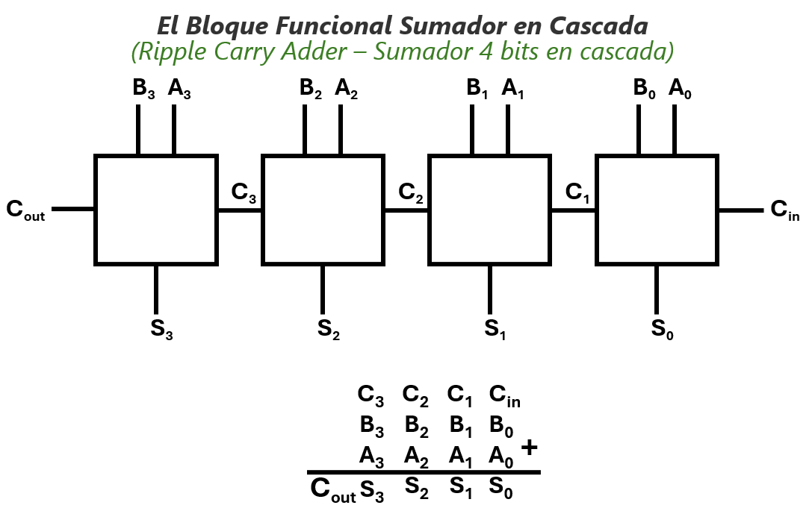
🔍 Cómo leer este diagrama:
Fig. 7: Sumador de 4 Bits (Ripple Carry Adder). Observa en la parte inferior cómo la arquitectura del chip es un reflejo exacto (isomorfismo) del proceso matemático mental.
A esta arquitectura se le conoce como Ripple Carry Adder (Sumador con propagación de acarreo), porque el cálculo del acarreo viaja a través de los chips como las ondas (ripples) en un estanque cuando lanzas una piedra.
Observa el diagrama de arriba con mentalidad de ingeniero. El segundo sumador no puede dar un resultado correcto hasta que el primero termine de calcular y le entregue su \(C_{out}\). El tercero debe esperar al segundo, y así sucesivamente. ¡El acarreo viaja como una ola de dominós cayendo!
Recordando el Retardo de Propagación (Glitch) de la Lección 22, cada compuerta toma nanosegundos en conmutar. Si tienes un procesador de 64 bits usando esta estructura básica, el bloque número 64 tendría que esperar a que el acarreo cruce los 63 chips anteriores antes de poder dar la suma final. ¡Sería demasiado lento!
Los ingenieros modernos resolvieron este atasco de tráfico con diseños avanzados llamados Carry Look-Ahead Adders (Sumadores de Acarreo Anticipado), usando matemáticas para "predecir" los acarreos al instante en lugar de esperar a que viajen en cascada.
¡Es hora de ensuciarse las manos! No podemos cerrar la unidad de Cómputo solo leyendo diagramas. Hoy vas a construir la máquina que acabas de estudiar.
Lo dividiremos en dos fases: primero cumpliremos la promesa de la Lección 20 armando un Semisumador (Half Adder) desde cero. Luego, usaremos el "Código Secreto de la Industria" (la abstracción) para usar un chip Sumador de 4 bits y ver la matemática brillar en 5 LEDs.
En el laboratorio anterior armaste la función XOR usando compuertas NAND para entender su naturaleza compleja. Hoy, daremos un paso más directo usando el chip dedicado XOR (74HC86) y le agregaremos el "cerebro" del acarreo usando una compuerta AND (74HC08).
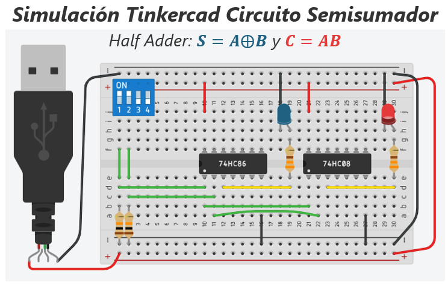
Fig. 8: El Semisumador (Half Adder) hecho realidad. Observa cómo la teoría se convierte en hardware:
🔵 LED Azul (Suma): Conectado a la salida del chip 74HC86 (XOR). Se enciende cuando las entradas A y B son diferentes (Suma = 1).
🔴 LED Rojo (Acarreo): Conectado a la salida del chip 74HC08 (AND). Se enciende únicamente cuando A=1 y B=1, indicando que hay que "llevar 1" a la siguiente columna.
Fíjate en el código de colores de los cables en la imagen (Fig. 9):
¿Te sientes valiente? Intenta convertir tu Half Adder actual en un Full Adder completo agregando el tercer interruptor (\(C_{in}\)) y la compuerta OR (7432).
No te daremos la guía de cableado paso a paso. Tu única brújula es el diagrama de "Rayos X al Sumador Completo" que analizaste arriba (Fig. 6), donde los números azules te indican qué pines usar de los chips 7486, 7408 y 7432.
Armar este circuito requiere 3 chips y más de 12 cables cruzados en tu protoboard. Es muy probable que te equivoques, que un cable haga falso contacto o que te frustres. ¡Esa es la verdadera vida del ingeniero de hardware! Si lo logras, sentirás la gloria absoluta. Si no enciende, usa tu LED verde (punta de prueba) para rastrear dónde se perdió la señal.
(Si el tiempo de tu clase es corto o la frustración es demasiada, puedes saltar directo a la Fase 2, donde los ingenieros resolvieron este problema empacando todo ese caos en un solo chip).
Armar un Full Adder de 1 bit requiere compuertas XOR, AND y OR. Armar uno de 4 bits en cascada (Ripple Carry) requeriría docenas de chips y un mar de cables. ¡Sería imposible de depurar en una protoboard!
Por suerte, los ingenieros encapsulan soluciones complejas en cajas negras. Conoce al Chip 74LS283: un Sumador Binario de 4 bits con Acarreo Rápido en una sola pastilla de silicio de 16 pines.
Cuando trabajas con un chip complejo como este, necesitas saber leer tres tipos de diagramas dependiendo de la herramienta que estés usando. Aprender a diferenciarlos es lo que separa a un aficionado de un profesional:
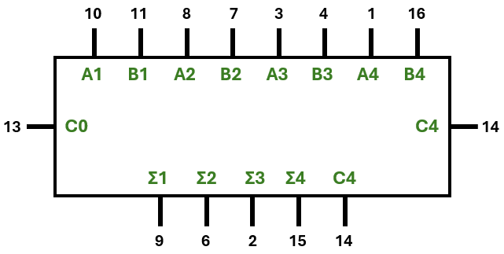
Para diseñar en papel. Agrupa las señales por su función: Entradas A, Entradas B, Acarreo ($C_0$) y Salidas ($\Sigma$). Oculta los pines de energía y se enfoca puro en el flujo matemático.
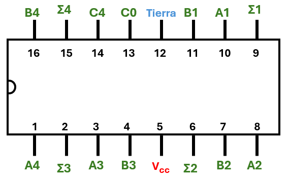
Para armar en tu Protoboard Física. Te dice exactamente en qué pata del chip va cada cable. Es caótico: las entradas A y B están mezcladas para facilitar el diseño interno del silicio, no al humano que lo conecta.
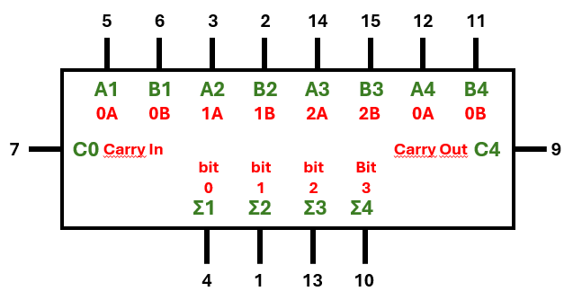
Para armar en el Simulador Virtual. Tinkercad nombra los pines de forma distinta al manual físico (letras rojas). Los computadores empiezan a contar desde 0 (0A), no desde 1 (A1). ¡Usa esta imagen para traducir!
¡Diseña con el primero, suelda con el segundo, simula con el tercero!
Antes de cablear, debes saber exactamente qué chip tienes entre las manos:
¡Físicamente los pines están en el mismo agujero, pero sus nombres cambian! Usa la imagen "La Piedra Rosetta" de arriba para traducir de un mundo a otro y evitar cruzar los cables.
Esta lista te sirve tanto si compraste el chip real como si usas Tinkercad:
¡Cuidado si compras componentes en tiendas antiguas! En el pasado existía el chip 7483 original, el cual tenía un diseño terrible: Vcc estaba en el pin 5 y GND en el 12.
Años después, los ingenieros lo corrigieron lanzando el 74LS283 (y el 74HC283 de Tinkercad), devolviendo la energía a las esquinas seguras (Vcc=16, GND=8). Si intentas alimentar un 283 por los pines 5 y 12, se quemará instantáneamente porque le estarías inyectando 5V a los pines de datos A1 y A4. ¡Siempre lee el datasheet del chip exacto que tienes en la mano!
Mira la siguiente captura de pantalla de Tinkercad. Un estudiante conectó el circuito y, al iniciar la simulación, el chip 74HC283 explotó.
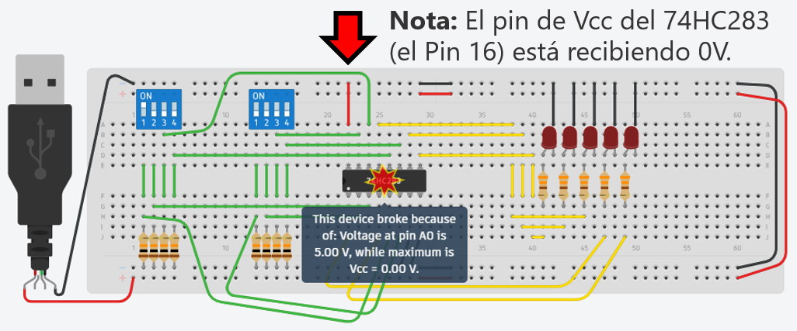
Fig. 12: Un error de puntería letal. El simulador arroja el mensaje: "Voltage at pin A0 is 5.00V, while maximum is Vcc = 0.00V".
El mensaje de Tinkercad es muy claro: el chip está recibiendo 5 voltios por uno de sus pines de datos (A0), pero su alimentación principal (Vcc) es de cero voltios.
Si observas la flecha roja en el cableado del estudiante:
El resultado: El pin Vcc está conectado a tierra (0V). Al inyectarle 5V por las entradas de datos a un chip que está "apagado", la corriente busca un camino desesperado hacia tierra quemando la electrónica interna. En la protoboard, un milímetro de error es la diferencia entre el éxito y el humo. ¡Revisa cada conexión con lupa!
🤓 Dato Nerd (Para mentes curiosas): ¿Por qué el chip mide el voltaje de A0 "en contra" de Vcc? Porque Vcc actúa como su Voltaje de Referencia máximo (su techo). Todos los chips tienen válvulas de seguridad microscópicas (diodos ESD) que bloquean cualquier energía que intente entrar al chip si es más alta que su propio "techo". Al bajarle el techo a 0V, la válvula de seguridad intentó tragar los 5V de golpe y explotó por exceso de corriente.
Imagina este escenario de pesadilla: Estás en el laboratorio, te entregan un chip de 16 pines con los números borrosos que parece decir "74LS283", no tienes internet para descargar el manual (Datasheet) y el reloj corre. Si conectas 5V al pin equivocado, el chip explota. ¿Cómo descubres el patillaje (pinout) usando solo tu cerebro y un multímetro?
En la familia TTL clásica (74LSxx), Vcc y GND casi siempre están en las esquinas opuestas (Pines 16 y 8 para chips de 16 patas). PERO YA SABES QUE ESTE CHIP ES UNA TRAMPA. Si sospechas que es un 7483 o 283 antiguo, debes usar el Multímetro en modo Continuidad (Diodo) para buscar los diodos de protección internos (ESD).
Una vez alimentado el chip con 5V y GND (con resistencias de seguridad gigantes por si acaso), NO conectes señales directas todavía.
¡Con este truco ninja, acabas de mapear las 5 salidas y los 9 pines de entrada del chip sin leer un solo manual!
Vamos a probar nuestra calculadora. Primero, pon los datos en Falstad para comprobar la matemática pura. Luego, replícalo en el mundo físico armando tu protoboard con el chip 74LS283 (o en el simulador de Tinkercad con el chip 74HC283) usando dos DIP switches para los números y 5 LEDs para el resultado.
0 1 0 1 (En Falstad: L H L H).0 1 1 0 (En Falstad: L H H L).Se ha explicado la importancia de los Diagramas Lógicos (donde solo vemos el flujo de información, sin preocuparnos por la energía). Es el momento propicio para que crees por ti mismo una simulación pura antes de tocar los cables.
Vamos a usar el simulador Falstad para colocar un sumador de 4 bits como bloque funcional y probarlo.
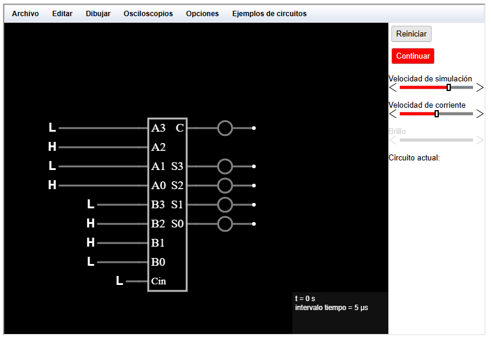
Fig. 13: Un Sumador de 4 bits en el simulador Falstad. Las entradas lógicas (L = Low/0, H = High/1) alimentan los operandos A y B. El resultado enciende los LEDs de salida.
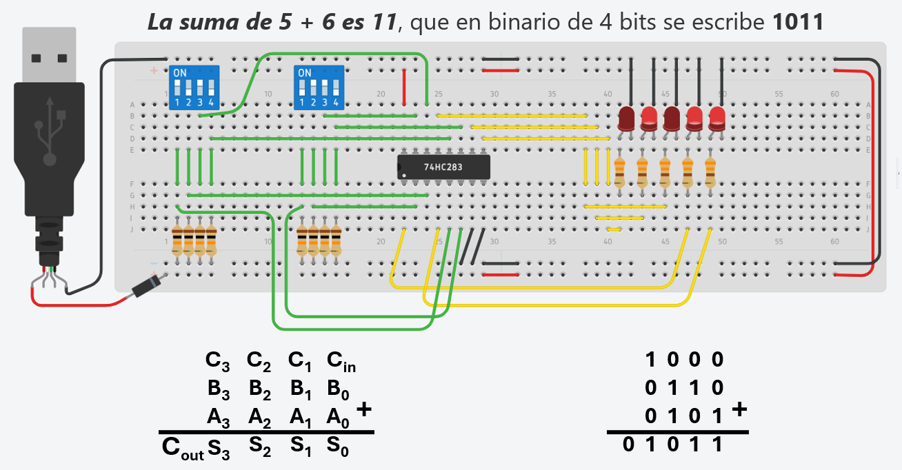
Fig. 14: ¡La Calculadora Binaria en acción física! Observa cómo los LEDs coinciden perfectamente con el resultado matemático de la suma binaria en la parte inferior.
Como ves en el diagrama inferior de la imagen, la suma de $0101$ (5) + $0110$ (6) nos da 01011.
Como el número 11 cabe perfectamente en un sumador de 4 bits (cuyo límite máximo es 15), el LED del acarreo de salida ($C_{out}$) permanece apagado.
Para que el LED de acarreo ($C_{out}$) se encienda, el resultado debe ser igual o mayor a 16. Intenta esto en tu simulador:
1010 (10).0111 (7).El resultado matemático es 17. Verás que los 4 LEDs de Suma ($S$) marcarán 0001 (1), y ¡el LED de \(C_{out}\) se encenderá! Ese quinto bit a la izquierda representa exactamente el valor 16. $\rightarrow$ $16 + 1 = 17$.
Lo que acabas de construir (sumar señales para sacar un resultado) es muy parecido a cómo funciona tu cerebro. Una neurona biológica recibe señales de muchas vecinas. Si la "suma" de esos estímulos supera un umbral, la neurona se "enciende" y dispara un pulso. ¡Estás replicando la vida con silicio!
Como mencionamos antes, si conectamos 64 de estos sumadores en fila, el último tiene que esperar a que el primero termine de calcular el acarreo. Esto toma tiempo (nanosegundos). Por eso los procesadores y computadoras tienen una velocidad máxima (frecuencia de reloj o GHz); no pueden pedir resultados más rápido de lo que la electricidad tarda en cruzar los chips.
Imagina el odómetro de un carro viejo que llega a 99,999 km. Si avanzas un kilómetro más, no muestra 100,000, sino que se reinicia a 00,000 porque no hay un sexto rodillo físico para mostrar el "1". En electrónica, a esto le llamamos Overflow o Desbordamiento.
Si a tu calculadora de 4 bits (cuyo límite en los 4 LEDs principales es 15) le intentas sumar 15 + 1, el resultado real es 16. Si no tuvieras el LED de acarreo extra ($C_{out}$), tu sistema diría que el resultado es 0. ¡El "1" se caería por el borde de la máquina!
En los años 60, la memoria (los transistores) costaba una fortuna. Para ahorrar espacio, los ingenieros decidieron guardar los años en las bases de datos usando solo 2 dígitos (ej: guardaban "98" en vez de 1998).
El sistema funcionó bien hasta que el reloj mundial pasó del 31 de diciembre de 1999 al 1 de enero de 2000. El contador pasó de 99 a 00. Las computadoras interpretaron el "00" no como el año 2000, sino como 1900. ¡Los sistemas de bancos y aerolíneas colapsaron lógicamente, empezando a calcular intereses negativos y fechas de nacimiento erróneas!
(Alerta de Futuro: El próximo gran desbordamiento ocurrirá el 19 de enero de 2038 en los sistemas Unix de 32 bits. Sus relojes internos llegarán al límite binario y se reiniciarán a 1901. ¡Ustedes serán los ingenieros encargados de salvar el mundo esa vez!)
¡Felicidades! Acabas de construir una Unidad Aritmético Lógica (ALU) básica y has dominado el concepto de Desbordamiento (Overflow).
Dos docentes discuten el "Momento Eureka" de enseñar a sumar a una máquina en el laboratorio. Analizan el salto psicológico que dan los estudiantes al ver 5 LEDs resolviendo un problema matemático, y comparten anécdotas sobre cómo enseñar la Abstracción de Hardware usando el chip 7483 para evitar el "nido de pájaros" de cables en la protoboard.
Usa esta guía para generar problemas de diseño aritmético en clase, utilizando la Inteligencia Artificial como validadora lógica.
"Comprendí que un Full Adder suma 3 bits ($A$, $B$, $C_{in}$) usando dos compuertas XOR y la lógica de acarreo, y que encadenarlos crea un Ripple Carry Adder. También entendí que chips como el 7483 encapsulan este diseño para ahorrar espacio. Quiero saber: ¿Cómo puedo modificar un sumador 7483 de 4 bits para que también funcione como RESTADOR utilizando compuertas XOR adicionales y el principio del Complemento a 2? Explícame el concepto paso a paso como si fuera a enseñárselo a mis estudiantes de grado 11°. Incluye un error común que cometen al interpretar el acarreo final ($C_{out}$) cuando el circuito está en modo resta."
Responde en tu cuaderno físico (o aquí) las siguientes reflexiones:
¡Acabas de graduarte en Arquitectura de Cómputo Básica! Sabes cómo construir una máquina desde la arena de silicio que procesa lógica y hace sumas aritméticas en milisegundos. Es un logro intelectual extraordinario.
Pero en el mundo real, los electrones viajan por cables enormes, cruzan océanos de fibra óptica y vuelan por el espacio hacia los satélites. En ese viaje, la radiación solar, el ruido de los motores y los glitches atacan tus datos sin piedad. ¿Qué pasa si envías a tu banco el número 1011 (11 dólares) pero, por culpa de un relámpago, llega modificado como 1001 (9 dólares)? Si una máquina no sabe detectar sus propios errores, es peligrosa y completamente inútil.
En la Unidad 4: Teoría de Códigos, aprenderemos a blindar nuestra información. Descubriremos cómo usar el "Bit de Paridad" y la magia matricial del "Código Hamming" para crear mensajes autocurativos que detectan y corrigen sus propios daños en el aire. ¡Bienvenidos al arte de la transmisión de datos invencible!